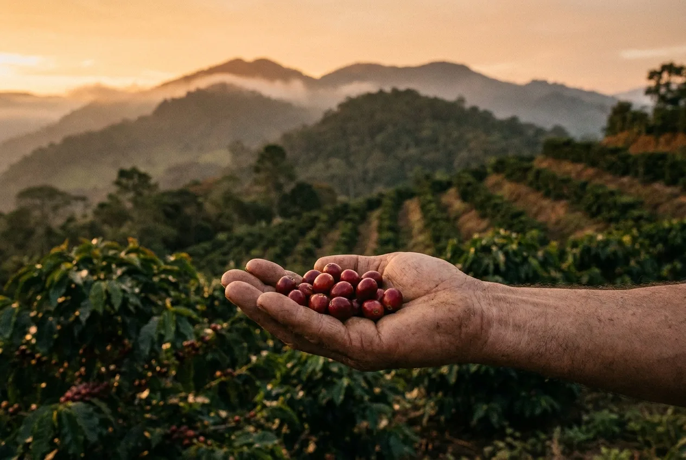
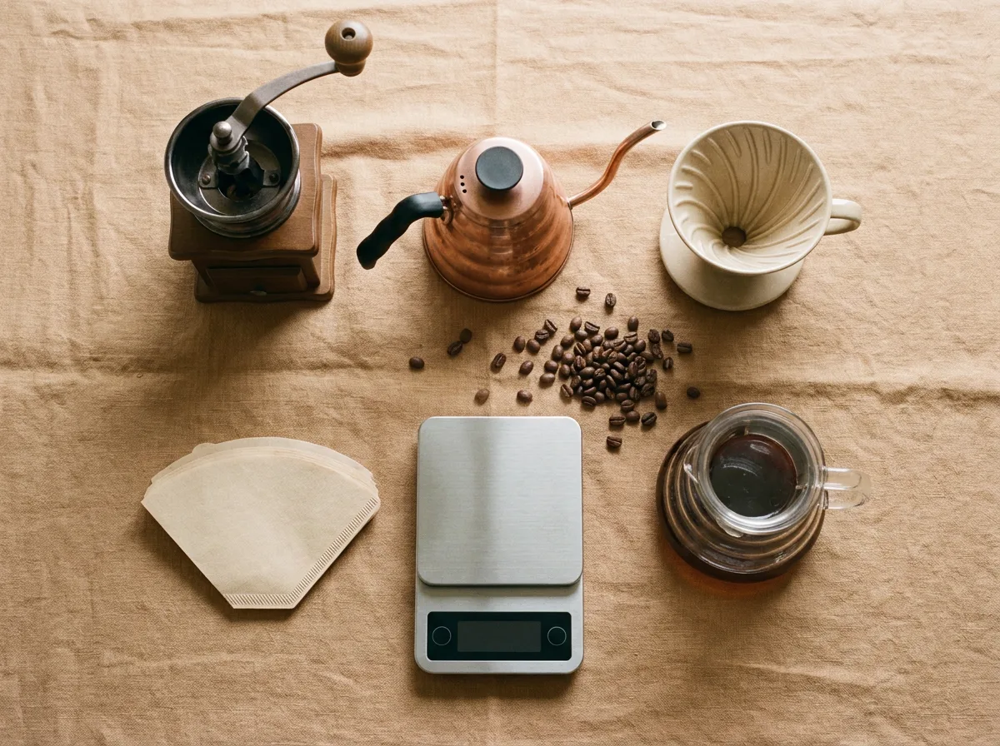
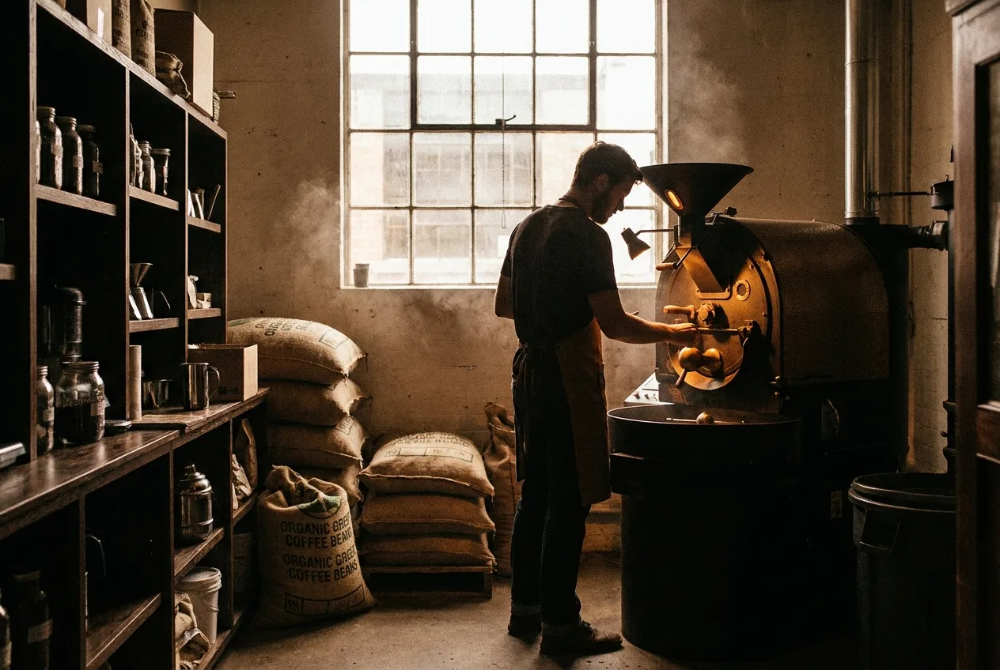

All Articles
 萃取科學
萃取科學
專文總覽
從萃取的科學到台灣的風土,從器材選擇到沖煮實作。在這裡,我們把每一杯咖啡都當作一篇值得細讀的文章。選一個分類,開始閱讀。
萃取科學萃取的科學:手沖咖啡的黃金參數
萃取率、濃度與金杯理論,加上一組能立刻複製的沖煮參數,讓每一杯都穩定甜美。

產區巡禮海拔與風味:台灣高山咖啡產區巡禮
從阿里山到台東,理解海拔、處理法與風土如何形塑台灣咖啡的個性。

沖煮指南居家沖煮指南:三種器材的入門路線
手沖 V60、法式濾壓與愛樂壓,步驟、比例與選擇建議一次說清楚。
萃取科學過萃還是萃取不足?用舌頭讀懂你的咖啡
苦澀、空洞與尖酸各自指向哪裡出了錯——一張風味診斷表,幫你校準下一杯。

產區巡禮日曬、水洗、蜜處理:處理法如何改寫風味
同一支豆子,不同的處理法會走向截然不同的味道。一篇讀懂三種主流工法。
沖煮指南粉水比速查:從濃郁到清爽的一張表
1:13 到 1:17 之間,你想要的是哪一種口感?一張對照表替你定位。